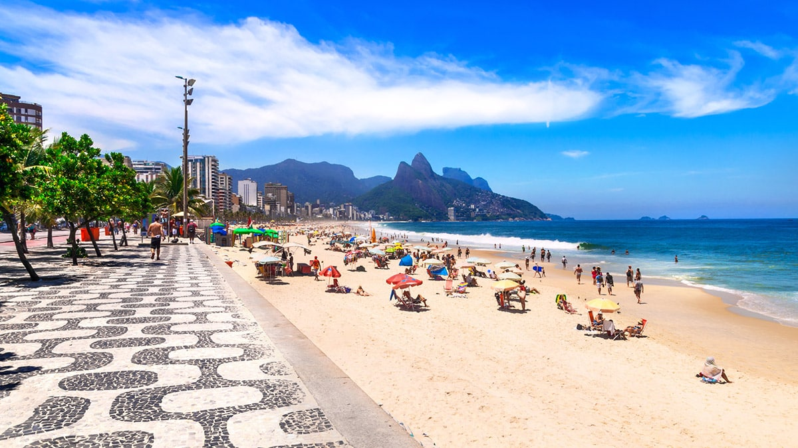
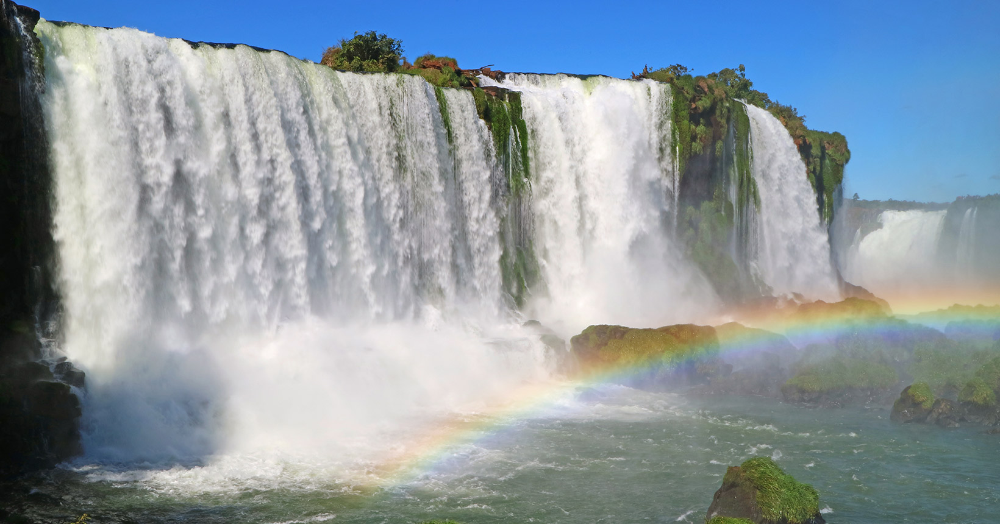
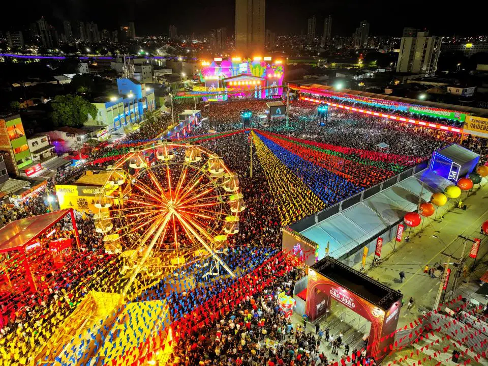

Descubra a Magia do Brasil
Que lugares intensos e fascinantes te esperam, descubra.
Categorias de Destinos

Possíveis destinos para você

Praias do Rio de Janeiro
O Rio de Janeiro é famoso por suas praias icônicas, como Copacabana, Ipanema e Leblon. Além de oferecerem paisagens deslumbrantes, essas praias são perfeitas para relaxar, praticar esportes e desfrutar da vibrante cultura carioca.

Foz do Iguaçu
Foz do Iguaçu é conhecida por suas impressionantes cachoeiras e a natureza exuberante. O local oferece diversas atividades turísticas, como trilhas, observação de aves e visitas às cataratas do Iguaçu.

São João de Campina Grande
São João de Campina Grande é uma cidade rica em história e cultura. O local oferece diversos pontos turísticos, como igrejas coloniais, mercados locais e trilhas naturais.